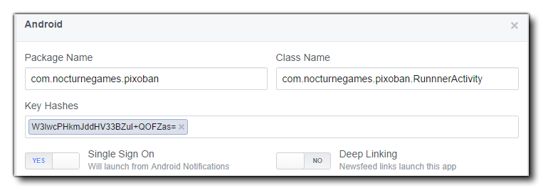

La API gráfica actual admitida es Graph API v2.0 en todas las plataformas.
NOTA: Si su dispositivo de prueba tiene instalada la aplicación de Facebook, estas funciones solo funcionarán cuando se cree un ejecutable, ya que simplemente probar el juego (usando los botones "reproducir" verde o naranja) no funcionará correctamente. Básicamente, el corrector de prueba y la aplicación FaceBook se comunican entre sí para que el mecanismo de comunicación tenga que configurarse correctamente, y usted solo lo configura correctamente mediante el botón Crear aplicación.
Cuando configura su página de Facebook para aceptar una aplicación de Android, debe dar el nombre del paquete de Android (formato de URL inverso y debe ajustarse a su ID de paquete de juego), y puede establecer el nombre de clase para ser <package_name>.RunnerActivity. GameMaker Studio 2 también es compatible con Single Sign-On para aplicaciones de Android, por lo que puede habilitar esto para permitir que el juego se inicie desde las notificaciones de la aplicación Android Facebook. No es necesario activar Deep Linking ya que GameMaker no lo admite.
También hay una sección en la que se requiere que ingreses el Android Keystore Hash que es exclusivo del almacén de claves que estás usando para tu juego. Como esto puede ser bastante difícil de conseguir, GameMaker Studio 2 puede generarlo para usted desde Android Preferencias de Android, y luego puede simplemente copiarlo y pegarlo en la parte requerida de la página de configuración de Facebook.
La imagen a continuación muestra cómo debe verse su sección final de Facebook en Android: 
La configuración básica para las aplicaciones de iOS con las funciones de Facebook es la misma que para Android, sin embargo, hay algunas cosas clave que deben configurarse correctamente en la página actual de Desarrolladores de Facebook para su aplicación:
- ID del paquete: debe coincidir con el ID del paquete de su juego (generalmente con el formato "com. {Yourcompany}. {Yourgame}").
- ID de la tienda de aplicaciones de iPhone: esta es la ID de Apple asociada con su juego, tal como se encuentra en el juego iTunes Connect for the iPhone.
- iPad App Store ID: como se muestra arriba, excepto para iPad.
- Inicio de sesión en Facebook: GameMaker Studio 2 compatible con Single Sign-On para aplicaciones iOS, por lo que puede habilitarlo para permitir que el juego se inicie desde la aplicación iOS de Facebook.
- Enlace profundo: esto no es compatible, por lo tanto, manténgase desactivado.
- Sufijo del esquema de URL: Esto no es compatible, por lo tanto déjelo en blanco.
También tenga en cuenta que la versión iOS Facebook SDK es 3.16.1, lo que significa que el objetivo mínimo de iOS es la versión v5.0 y superior.
El objetivo de HTML5 funciona casi exactamente igual que todos los módulos de destino anteriores, sin embargo, no puede probar las funciones localmente, lo que significa que tendrá que compilar y cargar en su servidor para probar. También hay una función adicional que se ha agregado para crear la compatibilidad de la pared de oferta para juegos HTML5 que no está disponible para otras plataformas:
Las funciones enumeradas a continuación son para integrar tu juego con Facebook:
facebook_init() antes de que cualquiera de estas funciones se pueda usar correctamente. Hay algunas cosas que se deben tener en cuenta cuando se trabaja con Facebook, y estas se enumeran a continuación:
- La función de inicio de sesión solo se invoca una vez en una acción de publicación a través de GameMaker Studio 2, por lo que si inicia sesión una vez e intenta volver a probar el botón, no hay resultados visibles.
- Si tiene la aplicación de Facebook instalada en su dispositivo Android, la función de inicio de sesión no se llamará en absoluto desde una aplicación compilada. Su aplicación inicia sesión automáticamente en la misma cuenta de Facebook que usted ha vinculado a su aplicación de Facebook.
- Si tiene la intención de permitir que su juego se publique de todos modos utilizando las funciones de Facebook, debe solicitar permiso de Facebook. Para facilitar esto, debe crear al menos una cuenta de usuario de prueba que ya haya probado que funciona para que Facebook pueda usarla y así simplificar la obtención de permisos.
- Al solicitar permiso de su aplicación para Facebook, es una buena idea informar a Facebook que su aplicación hará esto (en las notas de solicitud de permiso) para que sepan qué buscar. Además, incluya capturas de pantalla de la consola de comandos que muestren un inicio de sesión exitoso, la pantalla de inicio de sesión en su dispositivo y la publicación exitosa en la pared en su cuenta de prueba de Facebook.
- Si está utilizando un usuario de prueba, incluidas capturas de pantalla de la publicación mural del usuario de la prueba y tiene una prueba de Facebook, use el mismo usuario de prueba.
- Todo el texto que desea publicar tendrá que estar en el banner inferior de su publicación. Cualquier texto que esté prellenado (incluso si es editable por el usuario) no está permitido. Esto significa que tus publicaciones en el muro deberán ser publicaciones de diálogo que permitan al usuario escribir lo que quiera.
- Necesitará su nombre de paquete y nombre de clase para que sus permisos sean aprobados a través de Facebook. El nombre de su paquete aparece en la configuración de su juego, y el nombre de la clase es su nombre de paquete + ".RunnerActivity", por ejemplo: " com.macsweeneygames.catchthehaggis.RunnerActivity ")
- Si su juego ha sido configurado en el modo de "espacio aislado" desde el tablero de Facebook, todos los usuarios que deseen jugar su juego deben haber sido agregados a la lista de usuarios de prueba en Facebook.